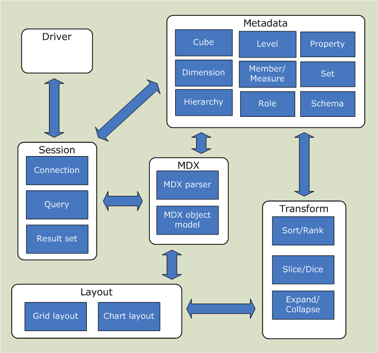

Author(s): Julian Hyde, Barry Klawans
Version: 0.89.1-dev (draft)
Revision: $Id$
(log)
Last modified: September 20th, 2007.
olap4j is an open Java API for building OLAP applications.
In essence, olap4j is to multidimensional data what JDBC is for relational data. olap4j has a similar programming model to JDBC, shares some of its core classes, and has many of the same advantages. You can write an OLAP application in Java for one server (say Mondrian) and easily switch it to another (say Microsoft Analysis Services, accessed via XML for Analysis).
However, creating a standard OLAP API for Java is a contentious issue. To understand why, it helps to understand the history of OLAP standards.
History is strewn with attempts to create a standard OLAP API. First, the OLAP council's MDAPI (in two versions), then the JOLAP API emerged from Sun's Java Community Process. These all failed, it seems, because at some point during the committee stages, all of the OLAP server vendors concerned lost interest in releasing an implementation of the standard. The standards were large and complex, and no user-interface provider stepped forward with a UI which worked with multiple back-ends.
Meanwhile, Microsoft introduced OLE DB for OLAP (which works only between Windows clients and servers), and then XML/A (XML for Analysis, a web-services API). These standards were more successful, for a variety of reasons. First, since the standards (OLE DB for OLAP in particular) were mainly driven by one vendor, they were not a compromise attempting to encompass the functionality of several products. Second, there was a ready reference implementation, and Microsoft saw to it that there were sufficient OLAP clients to make these standards viable forums for competition and innovation. Third, there was the MDX query language. A query language is easier to explain than an API. It leaves unsolved the problem of how to construct queries to answer business questions, but application developers could solve that problem by embedding one of the off-the-shelf OLAP clients.
The Open Source community has been developing a taste for OLAP. First there was Mondrian, an open-source OLAP server; then there was JPivot, a client which first spoke to Mondrian, then also to XML/A; then there were more OLAP clients, and applications which wanted to use a particular client, but wanted to talk to a variety of servers; and companies using a particular OLAP server that wanted to get at it from several clients. It became clear the open-source OLAP tools needed a standard, and that standard would probably be suitable for other Java-based OLAP tools.
An OLAP application interacts with an OLAP server by means of MDX statements belonging to connections. The statements are defined in terms of metadata and validated according to a type system, and some applications are built at a higher level, manipulating MDX parse trees, and defining complex queries in terms that a business user can understand. The olap4j API provides all of these facilities.
At the lowest level, olap4j has a framework for registering drivers, and managing the lifecycle of connections and statements. olap4j provides this support by extending the JDBC framework.
A key decision in the design of an OLAP API is whether to include a query language. Historically, it has been a contentious one. The previous standards fell into two camps: MDAPI and JOLAP had an API for building queries, while OLE DB for OLAP and XML/A had the MDX query language. The SQL query language is an essential component of relational database APIs such as ODBC and JDBC, and it makes similar sense to base an OLAP API on a query language such as MDX. But OLAP applications also need to build and transform queries as the end-user explores the data. So, olap4j embraces both approaches: you can create a query by parsing an MDX statement, you can build a query by manipulating an MDX parse tree, and an MDX parser library allows you to easily convert an MDX string to and from a parse tree.
Metadata is at the heart of olap4j. You can browse the cubes, dimensions, hierarchies, members in an OLAP schema, and an MDX parse tree and query result are tied back to the same metadata objects. There is also a type system for describing expressions.
olap4j makes it possible to write an OLAP client without starting from scratch. In addition to the MDX parser, and operations on the MDX parse tree, there is a higher-level query model, which includes operations to transform queries (also called 'navigations'), and facilities to layout multidimensional results as HTML tables.
At this point, you may be saying: what about XML/A? XML/A was here first, is an open standard, and is supported by a number of servers. Is olap4j an attempt to replace XML/A? Isn't XML/A good enough for everyone?
olap4j certainly has some similarities with XML/A. Both APIs allow an application to execute OLAP queries, and to browse the metadata of an OLAP schema. But XML/A is a low-level web-services API which leaves a lot of work to the application writer. (Witness the fact that the majority of successful XML/A applications run only on Windows, where the ADOMD.NET is a high-level interface to XML/A servers.) The APIs are mostly complementary, because olap4j can be easily added to an XML/A back-end, and provides features which would be difficult or impossible to provide via a web-services API. These are functions for parsing MDX, building and transforming MDX query models, and mapping result sets into graphical layouts such as pivot tables.
If a web-services based application needs these functions, it can use the XML/A provider to connect to the underlying data source, execute queries, and browse metadata, but can still use olap4j's features for MDX parsing, query models and layout.
Where possible, olap4j leverages existing standards. This has several advantages. First, an end-user familiar with the existing standards can come up to speed with olap4j quickly. For instance, creating a connection and executing a statement should be straightforward to anyone familiar with JDBC connections, statements and result sets work.
If an OLAP server implementor has already implemented a driver for one standard, then it should be less work to implement an olap4j driver. This clearly applies to the MDX language (borrowed from XML/A and OLE DB for OLAP). Implementation schema result sets should be straightforward if the server already supports XML/A schema rowsets.
If olap4j is sufficiently similar to an existing standard, tools designed for use with that standard may be applicable to olap4j also. For instance, one goal of olap4j is that people will be able to use connection-pooling libraries such as Jakarta Commons DBCP, C3P0. (This presents some challenges because olap4j extends some of the JDBC interfaces, but we hope to solve them.)
Lastly, reusing an existing standard is less work for the authors of the new standard!
Sometimes the standards conflict. ADOMD exposes its metadata through an object model, whereas JDBC and XML/A expose metadata relationally, via what XML/A calls rowsets and what we and JDBC call result sets. In this case, we chose to do both, because of the diversity of needs of olap4j clients. Metadata objects allow you to integrate query results with metadata using much fewer code: positions can reference members, and you can navigate from a member to its hierarchy, and so forth. Likewise, metadata objects can be used in building MDX parse trees. But if a client tool wants to maintain its own metadata cache, schema rowsets are more flexible and efficient.
Once the olap4j standard is in place, we can expect that the familiar benefits of an open standard will emerge: a larger variety of tools, better tools, and more price/feature competition between OLAP servers. These benefits follow because if a developer of OLAP tool can reach a larger audience, there is greater incentive to build new tools.
Eventually there will be olap4j providers for most OLAP servers. The server vendors will initially have little incentive to embrace a standard which will introduce competition into their market, but eventually the wealth of tools will compel them to write a provider; or, more likely, will tempt third-party or open-source efforts to build providers for their servers.
The following diagram shows how olap4j fits into an enterprise architecture.

olap4j requires JDK 1.5 or higher, in particular because it uses the generics and enum features introduced in JDK 1.5.0.
JDK 1.4 compability will be available on demand, using the
Retroweaver utility. This will
consist of a retrowoven JAR file, olap4j-jdk1.4.jar and
retroweaver's runtime library retroweaver-rt-1.2.4.jar. (See
design note.)
jdbc is consistent with JDBC version 3.0 (which was introduced in JDK 1.4 and is also in JDK 1.5).
JDBC version 4.0 is expected to be introduced in JDK 1.6.0. We expect JDBC 4.0 will add new methods to existing JDBC classes, and therefore compatibility with JDBC 4.0 will require a new release of olap4j.
We now describe the olap4j API in more detail, by breaking it down into a set of functional areas.
olap4j shares JDBC's driver management facilities. This allows olap4j clients to leverage the support for JDBC such as connection pooling, driver registration.
Classes:
Same functionality as JDBC.
Here is an example of registering an olap4j driver:
Same functionality as JDBC.
Same functionality as JDBC.
OlapException (extends java.sql.SQLException) describes an error which occurred while accessing an OLAP server.
Since olap4j extends JDBC, it is natural that OlapException should extend
JDBC's
SQLException. The implementation by an olap4j
driver of a JDBC method which is declared to throw a SQLException may, if the
driver chooses, throw instead an OlapException.
OlapException provides some additional information to help an OLAP client
identify the location of the error. The context is the Cell
or Position object where the error occurred. The region is an
object representing the textual region in the MDX statement.
Methods:
[move this section elsewhere]
Suppose one cube is available in English and French, and in French and
Spanish, and both are shown in same portal. Clients typically say that seeing
reports in a mixture of languages is confusing; the portal would figure out the
best common language, in this case French. Cube and Schema have
getSupportedLocales() methods for this purpose.
olap4j's connection management component manages connections to the OLAP server, statements.
Where possible, olap4j uses JDBC's session management facility. olap4j defines extensions to JDBC interfaces Connection and Statement.
For example, the following code registers a driver, connects to Mondrian and executes a statement:
Here's a piece of code to connect to Microsoft SQL Server Analysis Services™ (MSAS) via XML/A. Note that besides the driver class and connect string, the code is identical.
In the above examples, a statement was created from a string. As we shall see, a statement can also be created from an MDX parse tree.
Look again at the code samples in the previous section. One would
expect that it would be safe to downcast the result of a factory
method to the desired result. For example, if you invoke an OlapConnection's
createStatement() method, the result should be an
OlapStatement.
But if you you are using a connection-pooling
library (common examples of which include Jakarta Commons DBCP
and
C3P0), this is not so. Every
connection-pooling library tracks connections by wrapping them in another class,
and this class will implement java.sql.Connection but not
OlapConnection. To access methods of the OlapConnection, the
client application must first strip away the wrapper object.
If you are using a connection-pooling library, olap4j provides the
OlapWrapper
interface with the method method unwrap(Class) to access the object underneath
the wrapped
connection. For instance,
The OlapStatement,
OlapPreparedStatement,
and OlapResult
interfaces also extend OlapWrapper, and can be accessed similarly.
If connection pooling is not being used, then the object returned by the
driver will be an OlapConnection and will therefore trivially
implement OlapWrapper (because the OlapConnection
interface extends OlapWrapper). If connection pooling is being
used, the code will work provided that the implementor of the connection pool
has ensured that the pooled connection object implements the OlapWrapper
interface. This is a minor change to the connection pool, and we hope that
popular connection pools will utilize this method in the near future.
If you are using JDBC 4.0 (which is part of JDK 1.6 and later), the java.sql.Connection class implements the java.sql.Wrapper interface introduced in JDBC 4.0, so the code can be simplified:
Note that the OlapWrapper interface is not needed. This code
will work with any JDBC 4.0-compliant connection pool.
Package name: org.olap4j
OlapConnection (extends java.sql.Connection) is a connection to an OLAP data source.
Methods:
OlapWrapper provides the ability to retrieve a delegate instance when the instance in question is in fact a proxy class.
OlapWrapper duplicates the functionality of the
java.sql.Wrapper
interface (introduced in JDBC 4.0), making this functionality available to
olap4j clients running in a JDBC 3.0 environment. For code which will run only
on JDBC 4.0 and later, Wrapper can be used, and OlapWrapper
can be ignored.
Methods:
OlapStatement (extends java.sql.Statement) is an object used to execute a static MDX statement and return the result it produces.
PreparedOlapStatement (extends java.sql.PreparedStatement) represents a precompiled MDX statement.
An MDX statement is precompiled and stored in a PreparedOlapStatement
object. This object can then be used to efficiently execute this statement
multiple times.
The method PreparedStatement.getParameterMetaData() returns a description of the parameters, as in JDBC. The result is an OlapParameterMetaData.
To set values of parameters, use the setType(int, type)
methods. If a parameter is a member, use the setObject(int, Object)
method; throws an exception if the object is not a member, or is a member of the
wrong hierarchy.
Unlike JDBC, it is not necessary to assign a value to every parameter. This
is because OLAP parameters have a default value. Parameters have their default
value until they are set, and then retain their new values for each subsequent
execution of this PreparedOlapStatement.
The getCube() method returns the cube (or virtual cube) the prepared statement relates to.
OlapParameterMetaData
(extends
java.sql.ParameterMetaData) describes parameters of a
PreparedOlapStatement.
Additional methods:
getName()getOlapType(int param)CellSet (extends java.sql.ResultSet) is the result of executing an OlapStatement or PreparedOlapStatement.
It extends ResultSet, but since most of these methods are concerned with rows and columns, only a few of the base class's methods are applicable. The following methods are applicable:
Additional methods to retrieve the axes of the multidimensional result:
An OlapStatement can have no more than one CellSet open. Closing an OlapStatement, or preparing or executing a new query, implicitly closes any previous CellSet.
A CellSetAxis is an axis belonging to a CellSet.
A cell set has the same number of axes as the MDX statement which was executed to produce it. For example, a typical cell set, resulting from an MDX query with COLUMNS and ROWS expressions is two-dimensional, and therefore has two axes.
Each axis is an ordered collection of members or tuples. Each member or tuple on an axis is called a Position.
The positions on the cell set axis can be accessed sequentially or
random-access. Use the List<Position> getPositions() method to
return a list for random access, or the Iterator<Position> iterate()
method to obtain an iterator for sequential access.
Methods:
Methods:
Position is a position on a CellSetAxis.
Methods:
A Cell is a cell returned from an CellSet.
Methods:
Extends java.sql.ResultSetMetaData.
Methods:
Extends java.sql.DatabaseMetaData.
The MDX query model represents a parsed MDX statement.
An MDX query model can be created in three ways:
An MDX query model can exist in an unvalidated and validated state. In the unvalidated state, identifiers and function calls exist as raw strings, and no type information has been assigned. During validation, identifiers are resolved to specific MDX objects (members, etc.), type information is assigned, and if a function exists in several overloaded forms, a specific instance is chosen based upon the types of its arguments.
Any MDX query model can be serialized to a string containing MDX text.
An MDX query model can be converted into a statement. For example,
Package name: org.olap4j.mdx
Classes:
ParseTreeWriter is used in conjunction with the ParseTreeNode.unparse(ParseTreeWriter) method to convert a parse tree into MDX code.
Package name: org.olap4j.mdx.parser
Represents the types of nodes in an MDX query model.
Package name: org.olap4j.type
Represents the types of nodes in an MDX query model.
Here are some examples:
| Expression | Type |
|---|---|
1 + 2 |
Integer |
[Store] |
Dimension |
[Store].[State] |
Level<dimension=[Store], hierarchy=[Store]> |
[Store].[USA].[CA] |
Member<dimension=[Store], hierarchy=[Store], level=[Store].[State], member=[Store].[USA].[CA]> |
[Store].[USA].Children(2) |
Member<dimension=[Store], hierarchy=[Store], level=[Store].[State]> |
Since MDX is a late-binding language, some expressions will have unknown types, or only partial type information. For example, the expression
will have type Level<dimension=[Store], level=unknown>. The
validator knows that the <hierarchy>.Levels(<string expr>) function
returns a level, but exactly which level is not known until the expression is
evaluated at runtime.
Type is the base class for all types.
Scalar types:
NumericType) represents a fixed-point numeric expression. It
is a subclass of NumericType, and has precision and scale. An
integer expression would have scale 0.ASC
keyword in the expression Order(Gender.MEMBERS, Measures.[Unit Sales],
ASC) is a symbol. Symbol types are rarely used except if you are
manipulating a parse tree.Metadata types:
A metadata type may be constrained to a particular part of the schema. For
example, LevelType(hierarchy=[Time]) indicates that the expression
must evaluate to one of the levels of the [Time] hierarchy, that
is, one of the values [Time].[Year], [Time].[Quarter],
or [Time].[Month].
Composite types
{[Store].[USA].Children} is Set(Member(level=[Store].[Store
State]).
CrossJoin({[Gender].[F], [Gender].[M]}, [Store].Members) is
Set(Tuple(Member(level=[Gender].[Gender]), Member(hierarchy=[Store])).Package name: org.olap4j.metadata
Metadata are the objects which describe the structure of an OLAP schema: cubes, dimensions, members, properties and so forth.
olap4j exposes metadata in two very different ways:
A user's view of metadata may be subject to access control. For example, a user may not have read access to certain hierarchies within a cube, or to certain members within a hierarchy. The API methods must behave consistently with access control.
Example: If Fred does not have access to the
[Nation]level of the[Store]hierarchy, then theMember.getParentMember()method will return null if applied to[Store].[USA].[CA], because the 'real' parent member[Store].[USA]is invisible to him.
[Diagram of object model, showing relationships. Catalog contains Schema; Schema contains Cube and shared Dimension; Cube contains Dimension, Measure and Set; Measure is a Member; Dimension contains Hierarchy; Hierarchy contains Level; Level contains Member and Property.]
Most metadata objects extend the
MetadataElement interface, which gives them name and
uniqueName attributes, and localized caption and
description.
When the API returns a list of metadata elements whose names must be unique (for example, the list of dimensions in a cube), the return type is the NamedList extension to java.util.List.
Providers are at liberty to implement metadata objects using a cache, and
therefore over the course of time, different java objects may represent the same
underlying metadata object. Always use
equals(), not the = operator, when comparing metadata objects,
and do not use
IdentityHashMap.
A MetadataElement is an element which describes the structure of an OLAP schema.
Subtypes are Cube, Dimension, Hierarchy, Level, Member, Property. MetadataElement provides name and unique-name properties (not localized), and localized caption and description.
A Catalog is the highest level element in the hierarchy of metadata objects. A catalog contains one or more schemas.
Some OLAP servers may only have one catalog. Mondrian is one such OLAP server; its sole catalog is always called "LOCALDB".
To obtain the collection of catalogs in the current server, call the
OlapConnection.getCatalogs() method.
Methods:
A Schema is a collection of database objects that contain structural information, or metadata, about a database.
It belongs to a catalog and contains a number of cubes and shared dimensions.
A Cube is the central metadata object for representing multidimensional data.
It belongs to a schema, and is described by a list of dimensions and a list of measures. It may also have a collection of named sets, each defined by a formula.
A Dimension (extends MetadataElement) is an organized hierarchy of categories, known as levels, that describes data in a cube.
Dimensions typically describe a similar set of members upon which the user wants to base an analysis.
A dimension must have at least one hierarchy, and may have more than once, but most have exactly one hierarchy.
A Hierarchy (extends MetadataElement) is an organization of the set of members in a dimension and their positions relative to one another.
A hierarchy is a collection of levels, each of which is a category of similar members.
A Level (extends MetadataElement) is a group of members in a hierarchy, all with the same attributes and at the same depth in the hierarchy.
A Member (extends MetadataElement) is a data value in an OLAP dimension.
A Measure (extends Member) is a data value of primary interest to the user browsing the cube. It provides the value of each cell, and is usually numeric.
Every measure is a member of a special dimension called "Measures".
Property (extends MetadataElement) is the definition of a property of a member or a cell.
A NamedSet (extends MetadataElement) describes a set whose value is determined by an MDX expression. It belongs to a cube.
OlapDatabaseMetaData (extends java.sql.DatabaseMetaData) contains methods which return schema result sets.
Schema result sets are specified as in [XML for Analysis specification]. Here is a table of the XML/A methods and the corresponding olap4j method and element type.
| XML for Analysis schema rowset | Schema result set method | Metadata element |
|---|---|---|
| not supported | not supported | Database |
| not supported | DatabaseMetaData.getCatalogs | Catalog |
| not supported | DatabaseMetaData.getSchemas | Schema |
| DISCOVER_DATASOURCES | OlapDatabaseMetaData.getDatasources | not supported |
| DISCOVER_ENUMERATORS | not supported | not supported |
| DISCOVER_KEYWORDS | OlapDatabaseMetaData.getMdxKeywords | not supported |
| DISCOVER_LITERALS | OlapDatabaseMetaData.getLiterals | not supported |
| DISCOVER_PROPERTIES | OlapDatabaseMetaData.getDatabaseProperties | not supported |
| DISCOVER_SCHEMA_ROWSETS | not supported | not supported |
| MDSCHEMA_ACTIONS | OlapDatabaseMetaData.getActions | not supported |
| MDSCHEMA_CUBES | OlapDatabaseMetaData.getCubes | Cube |
| MDSCHEMA_DIMENSIONS | OlapDatabaseMetaData.getDimensions | Dimension |
| MDSCHEMA_FUNCTIONS | OlapDatabaseMetaData.getFunctions | not supported |
| MDSCHEMA_HIERARCHIES | OlapDatabaseMetaData.getHierarchies | Hierarchy |
| MDSCHEMA_INPUT_DATASOURCES | not supported | not supported |
| MDSCHEMA_KPIS | not supported | not supported |
| MDSCHEMA_LEVELS | OlapDatabaseMetaData.getLevels | Level |
| MDSCHEMA_MEASURES | OlapDatabaseMetaData.getMeasures | Measure |
| MDSCHEMA_MEMBERS | OlapDatabaseMetaData.getMembers | Member |
| MDSCHEMA_PROPERTIES | OlapDatabaseMetaData.getProperties | Property |
| MDSCHEMA_SETS | OlapDatabaseMetaData.getSets | NamedSet |
The rows returned in the result set returned from the metadata methods are structured according to the result set column layouts detailed in this section.
All columns noted in the following result sets are required, and they must be returned in the order shown. However, additional columns (which should be ignored by clients not expecting them) can be added at the end, and some columns can contain null data for info that does not apply.
The following sections describe the columns in each rowset. Each section includes a table that provides the following information for each column.
| Column heading | Contents |
|---|---|
| Column name | The name of the column in the output rowset. |
| Type | A description of the data type for the column, and whether the column may be NULL. |
| Description | A brief description of the purpose of the column. |
Specified by the DISCOVER_DATASOURCES XML for Analysis method.
The returned result set contains the following columns.
| Column name | Type | Description |
|---|---|---|
| DATA_SOURCE_NAME | String | The name of the data source, such as FoodMart 2000. Never null. |
| DATA_SOURCE_DESCRIPTION | String | A description of the data source, as entered by the publisher. |
| URL | String | The unique path that shows where to invoke the XML for Analysis methods for that data source. |
| DATA_SOURCE_INFO | String |
A string containing any additional information required to connect to the data source. This can include the Initial Catalog property or other information for the provider. Example: |
| PROVIDER_NAME | String |
The name of the provider behind the data source. Example: |
| PROVIDER_TYPE | String |
Comma-separated list of the types of data supported by the provider. May include one or more of the following types. Example follows this table.
|
| AUTHENTICATION_MODE | String |
Specification of what type of
security mode the data source uses. Values can be one of the following,
never null:
|
Returns information about the standard and provider-specific properties supported by an olap4j provider. Properties that are not supported by a provider are not listed in the return result set.
Specified by the DISCOVER_PROPERTIES XML for Analysis method,
except that we rename the VALUE property to PROPERTY_VALUE because "VALUE" is a
SQL:2003 reserved word.
The returned result set contains the following columns.
| Column name | Type | Description |
|---|---|---|
| PROPERTY_NAME | String | The name of the property. Never null. |
| PROPERTY_DESCRIPTION | String | A localizable text description of the property. |
| PROPERTY_TYPE | String | The XML data type of the property. |
| PROPERTY_ACCESS_TYPE | String | Access for the property. The value can be Read, Write, or ReadWrite. Never null. |
| IS_REQUIRED | boolean | True if a property is required, false if it is not required. |
| PROPERTY_VALUE | String | The current value of the property. This property is named VALUE in XMLA. |
Retrieves a list of information on supported literals, including data types and values.
Specified by the DISCOVER_LITERALS XML for Analysis method.
The returned result set contains the following columns.
| Column name | Type | Description |
|---|---|---|
| LITERAL_NAME | String | The name of the literal described in the row. Never null. Example: DBLITERAL_LIKE_PERCENT |
| LITERAL_VALUE | String |
Contains the actual literal value. Example, if |
| LITERAL_INVALID_CHARS | String | The characters, in the literal, that are not valid. For example, if table names can contain anything other than a numeric character, this string would be "0123456789". |
| LITERAL_INVALID_ STARTING_CHARS |
String | The characters that are not valid as the first character of the literal. If the literal can start with any valid character, this is null. |
| LITERAL_MAX_LENGTH | int | The maximum number of characters in the literal. If there is no maximum or the maximum is unknown, the value is –1. |
Describes the structure of cubes within a database.
Specified by the MDSCHEMA_CUBES XML for Analysis method.
The returned result set contains the following columns.
| Column name | Type | Description |
|---|---|---|
| CATALOG_NAME | String | The name of the database. |
| SCHEMA_NAME | String | Not supported. |
| CUBE_NAME | String | The name of the cube or dimension. Dimension names are prefaced by a dollar sign ($) symbol. |
| CUBE_TYPE | String | The type of the cube. Valid values are:
|
| CUBE_GUID | String | Not supported. |
| CREATED_ON | Timestamp | Not supported. |
| LAST_SCHEMA_UPDATE | Timestamp | The time that the cube was last processed. |
| SCHEMA_UPDATED_BY | String | Not supported. |
| LAST_DATA_UPDATE | Timestamp | The time that the cube was last processed. |
| DATA_UPDATED_BY | String | Not supported. |
| DESCRIPTION | String | A user-friendly description of the cube. |
| IS_DRILLTHROUGH_ENABLED | boolean | A Boolean that always returns true. |
| IS_LINKABLE | boolean | A Boolean that indicates whether a cube can be used in a linked cube. |
| IS_WRITE_ENABLED | boolean | A Boolean that indicates whether a cube is write-enabled. |
| IS_SQL_ENABLED | boolean | A Boolean that indicates whether SQL can be used on the cube. |
| CUBE_CAPTION | String | The caption of the cube. |
| BASE_CUBE_NAME | String | The name of the source cube if this cube is a perspective cube. |
| ANNOTATIONS | String | (Optional) A set of notes, in XML format. |
The rowset is sorted on CATALOG_NAME, SCHEMA_NAME, CUBE_NAME.
Retrieves a result set describing the shared and private dimensions within a database.
Specified by the MDSCHEMA_DIMENSIONS XML for Analysis method.
The returned result set contains the following columns.
| Column name | Type | Description |
|---|---|---|
| CATALOG_NAME | String | The name of the database. |
| SCHEMA_NAME | String | Not supported. |
| CUBE_NAME | String | The name of the cube. |
| DIMENSION_NAME | String | The name of the dimension. If a dimension is part of more than one cube or measure group, then there is one row for each unique combination of dimension, measure group, and cube. |
| DIMENSION_UNIQUE_NAME | String | The unique name of the dimension. |
| DIMENSION_GUID | String | Not supported. |
| DIMENSION_CAPTION | String | The caption of the dimension. This should be used when displaying the name of the dimension to the user, such as in the user interface or reports. |
| DIMENSION_ORDINAL | int | The position of the dimension within the cube. |
| DIMENSION_TYPE | int | The type of the dimension. Valid values include the values of the
xmlaOrdinal attribute of the
org.olap4j.Dimension.Type
enum. |
| DIMENSION_CARDINALITY | int | The number of members in the key attribute. |
| DEFAULT_HIERARCHY | String | A hierarchy from the dimension. Preserved for backwards compatibility. |
| DESCRIPTION | String | A user-friendly description of the dimension. |
| IS_VIRTUAL | boolean | Always false. |
| IS_READWRITE | boolean | A Boolean that indicates whether the dimension
is write-enabled.
|
| DIMENSION_UNIQUE_SETTINGS | int | A bitmap that specifies which columns contain
unique values if the dimension contains only members
with unique names. The following bit value constants
are defined for this bitmap:
|
| DIMENSION_MASTER_ UNIQUE_NAME |
String | Always null. |
| DIMENSION_IS_VISIBLE | boolean | Always true. |
The result set is sorted on CATALOG_NAME, SCHEMA_NAME, CUBE_NAME, DIMENSION_NAME.
Retrieves a result set describing the functions available to client applications connected to the database.
Specified by the MDSCHEMA_FUNCTIONS XML for Analysis method.
The returned result set contains the following columns.
| Column name | Type | Description |
|---|---|---|
| FUNCTION_NAME | String | The name of the function. |
| DESCRIPTION | String | A description of the function. |
| PARAMETER_LIST | String | A comma delimited list of parameters formatted as in Microsoft Visual Basic. For example, a parameter might be Name as String. |
| RETURN_TYPE | int | The VARTYPE of the return data type of the function. |
| ORIGIN | int | The origin of the function:
|
| INTERFACE_NAME | String | The name of the interface for user-defined
functions The group name for Multidimensional Expressions (MDX) functions. |
| LIBRARY_NAME | String | The name of the type library for user-defined
functions. null for MDX functions. |
| DLL_NAME | String | (Optional) The name of the assembly that
implements the user-defined function. Returns |
| HELP_FILE | String | (Optional) The name of the file that contains
the help documentation for the user-defined
function. Returns |
| HELP_CONTEXT | int | (Optional) Returns the Help context ID for this function. |
| OBJECT | String | (Optional) The generic name of the object class
to which a property applies. For example, the rowset
corresponding to the <level_name>.Members function
returns "Level". Returns |
| CAPTION | String | The display caption for the function. |
The rowset is sorted on ORIGIN, INTERFACE_NAME, FUNCTION_NAME.
Retrieves a result set describing each hierarchy within a particular dimension.
Specified by the MDSCHEMA_HIERARCHIES XML for Analysis method.
The returned result set contains the following columns.
| Column name | Type | Description |
|---|---|---|
| CATALOG_NAME | String | The name of the catalog to which this hierarchy
belongs. null if the provider does not
support catalogs. |
| SCHEMA_NAME | String | Not supported |
| CUBE_NAME | String | (Required) The name of the cube to which this hierarchy belongs. |
| DIMENSION_UNIQUE_NAME | String | The unique name of the dimension to which this hierarchy belongs. For providers that generate unique names by qualification, each component of this name is delimited. |
| HIERARCHY_NAME | String | The name of the hierarchy. Blank if there is only a single hierarchy in the dimension. This will always have a value in Microsoft SQL Server 2005 Analysis Services (SSAS). |
| HIERARCHY_UNIQUE_NAME | String | The unique name of the hierarchy. |
| HIERARCHY_GUID | String | Not supported |
| HIERARCHY_CAPTION | String | A label or a caption associated with the hierarchy. Used primarily for display purposes. If a caption does not exist, HIERARCHY_NAME is returned. If the dimension either does not contain a hierarchy or has just one hierarchy, this column will contain the name of the dimension. |
| DIMENSION_TYPE | int | The type of the dimension. Valid values include the values of the xmlaOrdinal attribute of . |
| HIERARCHY_CARDINALITY | int | The number of members in the hierarchy. |
| DEFAULT_MEMBER | String | The default member for this hierarchy. This is a unique name. Every hierarchy must have a default member. |
| ALL_MEMBER | String | The member at the highest level of the rollup. |
| DESCRIPTION | String | A human-readable description of the hierarchy.
null if no description exists. |
| STRUCTURE | int | The structure of the hierarchy. Valid values
include the following values:
|
| IS_VIRTUAL | boolean | Always returns false. |
| IS_READWRITE | boolean | A Boolean that indicates whether the Write Back
to dimension column is enabled. Returns |
| DIMENSION_UNIQUE_SETTINGS | int | Always returns MDDIMENSIONS_MEMBER_KEY_UNIQUE (1). |
| DIMENSION_MASTER_ UNIQUE_NAME |
String | Always returns null. |
| DIMENSION_IS_VISIBLE | boolean | Always returns true. If the dimension is
not visible, it will not appear in the schema
rowset. |
| HIERARCHY_ORDINAL | int | The ordinal number of the hierarchy across all hierarchies of the cube. |
| DIMENSION_IS_SHARED | boolean | Always returns true. |
| HIERARCHY_IS_VISIBLE | boolean | A Boolean that indicates whether the hieararchy
is visible. Returns |
| HIERARCHY_ORIGIN | int | A bit mask that determines the source of the
hierarchy:
A parent/child attribute hierarchy is both MD_USER_DEFINED and MD_SYSTEM_ENABLED. |
| HIERARCHY_DISPLAY_FOLDER | String | The path to be used when displaying the hierarchy in the user interface. Folder names will be separated by a semicolon (;). Nested folders are indicated by a backslash (\). |
| INSTANCE_SELECTION | int | A hint to the client application on how to show
the hierarchy. Valid values include the following
values:
[todo: find the ordinals corresponding to these values] |
The rowset is sorted on CATALOG_NAME, SCHEMA_NAME, CUBE_NAME, DIMENSION_UNIQUE_NAME, HIERARCHY_NAME.
Retrieves a result set describing each level within a particular hierarchy.
Specified by the MDSCHEMA_LEVELS XML for Analysis method.
The returned result set contains the following columns.
| Column name | Type | Description |
|---|---|---|
| CATALOG_NAME | String | The name of the catalog to which this level
belongs. null if the provider does not
support catalogs. |
| SCHEMA_NAME | String | The name of the schema to which this level
belongs. null if the provider does not
support schemas. |
| CUBE_NAME | String | The name of the cube to which this level belongs. |
| DIMENSION_UNIQUE_NAME | String | The unique name of the dimension to which this level belongs. For providers that generate unique names by qualification, each component of this name is delimited. |
| HIERARCHY_UNIQUE_NAME | String | The unique name of the hierarchy. If the level belongs to more than one hierarchy, there is one row for each hierarchy to which it belongs. For providers that generate unique names by qualification, each component of this name is delimited. |
| LEVEL_NAME | String | The name of the level. |
| LEVEL_UNIQUE_NAME | String | The properly escaped unique name of the level. |
| LEVEL_GUID | String | Not supported. |
| LEVEL_CAPTION | String | A label or caption associated with the hierarchy. Used primarily for display purposes. If a caption does not exist, LEVEL_NAME is returned. |
| LEVEL_NUMBER | int | The distance of the level from the root of the hierarchy. Root level is zero (0). |
| LEVEL_CARDINALITY | int | The number of members in the level. |
| LEVEL_TYPE | int | Type of the level. Values are as allowed by the xmlaOrdinal field of the
org.olap4j.Level.Type
enum. |
| DESCRIPTION | String | A human-readable description of the level. null if no description exists. |
| CUSTOM_ROLLUP_SETTINGS | int | A bitmap that specifies the custom rollup
options:
|
| LEVEL_UNIQUE_SETTINGS | int | A bitmap that specifies which columns contain
unique values, if the level only has members with
unique names or keys. The Msmd.h file defines the
following bit value constants for this bitmap:
The key is always unique in Microsoft SQL Server 2005 Analysis Services (SSAS). The name will be unique if the setting on the attribute is UniqueInDimension or UniqueInAttribute |
| LEVEL_IS_VISIBLE | boolean | A Boolean that indicates whether the level is
visible. Always returns True. If the level is not visible, it will not be included in the schema rowset. |
| LEVEL_ORDERING_PROPERTY | String | The ID of the attribute that the level is sorted on. |
| LEVEL_DBTYPE | int | The DBTYPE enumeration of the member key
column that is used for the level attribute. Null if concatenated keys are used as the member key column. |
| LEVEL_MASTER_ UNIQUE_NAME |
String | Always returns null. |
| LEVEL_NAME_ SQL_COLUMN_NAME |
String | The SQL representation of the level member names. |
| LEVEL_KEY_ SQL_COLUMN_NAME |
String | The SQL representation of the level member key values. |
| LEVEL_UNIQUE_NAME_ SQL_COLUMN_NAME |
String | The SQL representation of the member unique names. |
| LEVEL_ATTRIBUTE_ HIERARCHY_NAME |
String | The name of the attribute hierarchy providing the source of the level. |
| LEVEL_KEY_CARDINALITY | int | The number of columns in the level key. |
| LEVEL_ORIGIN | int | A bit map that defines how the level was
sourced:
|
The rowset is sorted on CATALOG_NAME, SCHEMA_NAME, CUBE_NAME, DIMENSION_UNIQUE_NAME, HIERARCHY_UNIQUE_NAME, LEVEL_NUMBER.
Retrieves a result set describing each measure within a cube.
Specified by the MDSCHEMA_MEASURES XML for Analysis method.
The returned result set contains the following columns.
| Column name | Type | Description |
|---|---|---|
| CATALOG_NAME | String | The name of the catalog to which this measure
belongs. null if the provider does not
support catalogs. |
| SCHEMA_NAME | String | The name of the schema to which this measure
belongs. null if the provider does not
support schemas. |
| CUBE_NAME | String | The name of the cube to which this measure belongs. |
| MEASURE_NAME | String | The name of the measure. |
| MEASURE_UNIQUE_NAME | String | The Unique name of the measure. For providers that generate unique names by qualification, each component of this name is delimited. |
| MEASURE_CAPTION | String | A label or caption associated with the measure. Used primarily for display purposes. If a caption does not exist, MEASURE_NAME is returned. |
| MEASURE_GUID | String | Not supported. |
| MEASURE_AGGREGATOR | int | An enumeration that identifies how a measure was
derived. Can be one of the values allowed by the xmlaOrdinal field of the
org.olap4j.Measure.Aggregator
enum. |
| DATA_TYPE | int | The data type of the measure. |
| NUMERIC_PRECISION | int | The maximum precision of the property if the
measure object's data type is exact numeric. null
for all other property types. |
| NUMERIC_SCALE | int | The number of digits to the right of the decimal
point if the measure object's type indicator is
DBTYPE_NUMERIC or DBTYPE_DECIMAL.
Otherwise, this value is null. |
| MEASURE_UNITS | String | Not supported |
| DESCRIPTION | String | A human-readable description of the measure. null if no description exists. |
| EXPRESSION | String | An expression for the member. |
| MEASURE_IS_VISIBLE | boolean | A Boolean that always returns True. If the measure is not visible, it will not be included in the schema rowset. |
| LEVELS_LIST | String | A string that always returns null. |
| MEASURE_NAME_ SQL_COLUMN_NAME |
String | The name of the column in the SQL query that corresponds to the measure's name. |
| MEASURE_UNQUALIFIED_ CAPTION |
String | The name of the measure, not qualified with the measure group name. |
| MEASUREGROUP_NAME | String | The name of the measure group to which the measure belongs. |
| MEASURE_DISPLAY_FOLDER | String | The path to be used when displaying the measure in the user interface. Folder names will be separated by a semicolon. Nested folders are indicated by a backslash (\). |
| DEFAULT_FORMAT_STRING | String | The default format string for the measure. |
The rowset is sorted on CATALOG_NAME, SCHEMA_NAME, CUBE_NAME, MEASURE_NAME.
Retrieves a result set describing the members within a database.
Specified by the MDSCHEMA_MEMBERS XML for Analysis method.
The returned result set contains the following columns.
| Column name | Type | Description |
|---|---|---|
| CATALOG_NAME | String | The name of the database to which this member belongs. |
| SCHEMA_NAME | String | The name of the schema to which this member belongs. |
| CUBE_NAME | String | The name of the cube to which this member belongs. |
| DIMENSION_UNIQUE_NAME | String | The unique name of the dimension to which this member belongs. |
| HIERARCHY_UNIQUE_NAME | String | The unique name of the hierarchy to which this member belongs. |
| LEVEL_UNIQUE_NAME | String | The unique name of the level to which this member belongs. |
| LEVEL_NUMBER | int | The distance of the member from the root of the hierarchy. The root level is zero (0). |
| MEMBER_ORDINAL | int | (Deprecated) Always returns 0. |
| MEMBER_NAME | String | The name of the member. |
| MEMBER_UNIQUE_NAME | String | The unique name of the member. |
| MEMBER_TYPE | int | The type of the member, one of the values of the ordinal field of the
org.olap4j.Member.Type
enum.FORMULA takes precedence over MEASURE. For example, if there is a formula (calculated) member on the Measures dimension, it is listed as FORMULA. |
| MEMBER_GUID | String | The GUID of the member. null if no GUID
exists. |
| MEMBER_CAPTION | String | A label or caption associated with the member. Used primarily for display purposes. If a caption does not exist, MEMBER_NAME is returned. |
| CHILDREN_CARDINALITY | int | The number of children that the member has. This can be an estimate, so consumers should not rely on this to be the exact count. Providers should return the best estimate possible. |
| PARENT_LEVEL | int | The distance of the member's parent from the root level of the hierarchy. The root level is zero (0). |
| PARENT_UNIQUE_NAME | String | The unique name of the member's parent. null
is returned for any members at the root level. |
| PARENT_COUNT | int | The number of parents that this member has. |
| DESCRIPTION | String | Always returns null. |
| EXPRESSION | String | The expression for calculations, if the member is of type MDMEMBER_TYPE_FORMULA. |
| MEMBER_KEY | String | The value of the member's key column. Returns null if the member has a composite key. |
| IS_PLACEHOLDERMEMBER | boolean | A Boolean that indicates whether a member is a
placeholder member for an empty position in a
dimension hierarchy. It is valid only if the MDX Compatibility property has been set to 1. |
| IS_DATAMEMBER | boolean | A Boolean that indicates whether the member is a
data member.
Returns True if the member is a data member. |
| Zero or more additional columns | int | No properties are returned if the members could
be returned from multiple levels. For example, if
the Tree operator is PARENT and SELF
for a non-parent child hierarchy, no member
properties are returned.
This applies to ragged hierarchies where tree operators could return members from different levels (for example, if the prior level contains holes and parent on members is requested). |
The rowset is sorted on CATALOG_NAME, SCHEMA_NAME, CUBE_NAME, DIMENSION_UNIQUE_NAME, HIERARCHY_UNIQUE_NAME, LEVEL_UNIQUE_NAME, LEVEL_NUMBER, MEMBER_ORDINAL.
Retrieves a list of descriptions of member and cell Properties.
Specified by the MDSCHEMA_PROPERTIES XML for Analysis method.
The returned result set contains the following columns.
| Column name | Type | Description |
|---|---|---|
| CATALOG_NAME | String | The name of the database. |
| SCHEMA_NAME | String | The name of the schema to which this property
belongs. null if the provider does not
support schemas. |
| CUBE_NAME | String | The name of the cube. |
| DIMENSION_UNIQUE_NAME | String | The unique name of the dimension. For providers that generate unique names by qualification, each component of this name is delimited. |
| HIERARCHY_UNIQUE_NAME | String | The unique name of the hierarchy. For providers that generate unique names by qualification, each component of this name is delimited. |
| LEVEL_UNIQUE_NAME | String | The unique name of the level to which this property belongs. If the provider does not support named levels, it should return the DIMENSION_UNIQUE_NAME value for this field. For providers that generate unique names by qualification, each component of this name is delimited. |
| MEMBER_UNIQUE_NAME | String | The unique name of the member to which the
property belongs. Used for data stores that do not
support named levels or have properties on a
member-by-member basis. If the property applies to
all members in a level, this column is null.
For providers that generate unique names by
qualification, each component of this name is
delimited. |
| PROPERTY_TYPE | int | A bitmap that specifies the type of the
property:
|
| PROPERTY_NAME | String | The name of the property. If the key for the property is the same as the name for the property, PROPERTY_NAME will be blank. |
| PROPERTY_CAPTION | String | A label or caption associated with the property, used primarily for display purposes. Returns PROPERTY_NAME if a caption does not exist. |
| DATA_TYPE | int | The data type of the property. |
| CHARACTER_ MAXIMUM_LENGTH |
int | The maximum possible length of the property, if
it is a character, binary, or bit type.
Zero indicates there is no defined maximum length. Returns |
| CHARACTER_OCTET_LENGTH | int | The maximum possible length (in bytes) of the
property, if it is a character or binary type.
Zero indicates there is no defined maximum length. Returns |
| NUMERIC_PRECISION | int | The maximum precision of the property, if it is
a numeric data type.
Returns |
| NUMERIC_SCALE | int | The number of digits to the right of the decimal
point, if it is a DBTYPE_NUMERIC or
DBTYPE_DECIMAL type.
Returns |
| DESCRIPTION | String | A human readable description of the property. null if no description exists. |
| PROPERTY_CONTENT_TYPE | int | The type of the property. Can be one of the values of the xmlaOrdinal field of the
org.olap4j.Property.ContentType
enum. |
| SQL_COLUMN_NAME | String | The name of the property used in SQL queries from the cube dimension or database dimension. |
| LANGUAGE | int | The translation expressed as an LCID. Only valid for property translations. |
| PROPERTY_ORIGIN | int | Identifies the type of hierarchy that the
property applies to:
|
| PROPERTY_ATTRIBUTE_ HIERARCHY_NAME |
String | The name of the attribute hierarchy sourcing this property. |
| PROPERTY_CARDINALITY | String | The cardinality of the property. Possible values
include the following strings:
|
| MIME_TYPE | String | The mime type for binary large objects (BLOBs). |
| PROPERTY_IS_VISIBLE | boolean | A Boolean that indicates whether the property is
visible.
|
This schema rowset is not sorted.
Retrieves a result set describing any sets that are currently defined in a database, including session-scoped sets.
Specified by the MDSCHEMA_SETS XML for Analysis method.
The returned result set contains the following columns.
| Column name | Type | Description |
|---|---|---|
| CATALOG_NAME | String | The name of the database. |
| SCHEMA_NAME | String | Not supported. |
| CUBE_NAME | String | The name of the cube. |
| SET_NAME | String | The name of the set, as specified in the CREATE SET statement. |
| SCOPE | int | The scope of the set:
|
| DESCRIPTION | String | Not supported. |
| EXPRESSION | String | The expression for the set. |
| DIMENSIONS | String | A comma delimited list of hierarchies included in the set. |
| SET_CAPTION | String | A label or caption associated with the set. The label or caption is used primarily for display purposes. |
| SET_DISPLAY_FOLDER | String | The path to be used by the user interface when displaying the set. Folder names are separated by a backslash (\), folders are separated by a semicolon (;). |
The rowset is sorted on CATALOG_NAME, SCHEMA_NAME, CUBE_NAME.
| Method | Description |
|---|---|
getDatabase() |
Returns the one and only Database. |
getMdxKeywords() |
Returns the keywords of this dialect of MDX, as a comma-separated string. |
A transform is an operation which maps a query model to a new query model. It is usually triggered by a gesture within the user-interface. For example, clicking on the Unit Sales column transforms the query
into one with sorting:
Transformations can only modify a query within a cube - it cannot be used to change the cube that the query is against or to join two cubes. Similarly, the transform package only supports modifying a MDX query model. For example, a "drill" transform can not be used to produce a SQL query that returns data outside of the cube.
Package name: org.olap4j.transform
Classes: (incomplete)
This section should probably be moved into Section 2.4
The MDX query language uses a data model based on cubes, dimensions, tuples and sets. The transformation package allows direct manipulation of a query exploring a cube.
A tuple is a multidimensional member. It is a combination of members from one or more dimensions, with the limitation that only one member can be used from each dimension. A set is an ordered collection of tuples. An MDX query selects zero or more axes using a data slicer. (The axes loosely correspond to the "SELECT" clause in a SQL query, and the slicer to the "WHERE".)
The defined set of navigations can be divided into four categories: Slicing, Restructuring, Drilling, Scoping.
Restructuring navigations change the axes of the returned cube.
Navigations that allow a user to move through the levels in a hierarchy. All drill navigations operate on a single Axis.
Navigations that allow a user to expand/collapse sections of a result set. All scoping navigations operate on single Axis.
Axis Operations
Set Operations
Tuple Operations
The layout package provides data models for graphical OLAP applications. In particular, the GridModel class provides, for OLAP data, what Swing's TableModel provides for SQL data.
Package name: org.olap4j.layout
Classes: TBD
The API described above is a set of interfaces which must be implemented by any compliant provider. The olap4j project also contains some components which are not part of the API.
The olap4j project contains a TCK (Test Compatability Kit). The TCK is a suite of tests which can be used to verify the compliance of an implementation of the API.
The XML/A provider is an implementation of the olap4j API which talks to a generic XML/A provider.
Since there are many XML/A providers, and some of them require requests in a particular format and/or produce idiosyncratic responses, the XML/A provider will come in several flavors.
Here are some of the areas of functionality which will not be part of olap4j:
The Mondrian project will contain an implementation of the olap4j API based on the Mondrian OLAP engine.
This code is currently being developed the same source-code repository as olap4j, and is the reference implementation of olap4j. The code will be contributed to the mondrian project in the mondrian-3.0 release, when olap4j will become mondrian's primary API, and the mondrian team will take over its development.
We intend to create an a driver which implements the olap4j API on top of any XML/A data source.
This code is currently being developed in the same source-code repository as olap4j, but will never be part of any olap4j release, and will be spun off as a separate project before olap4j 1.0.
In principle, providers could be created to other OLAP data sources. This would be particularly straightforward for servers which already have a native Java API.
The following are features which have been suggested for inclusion in the olap4j specification, but which are not part of the current version. They may be included in future revisions of the specification.
Include support for Date and Time values. The package org.olap4j.type
could have additional classes DateType and TimeType.
(Richard Emberson, 2006/8/14)
Add a mechanism for the client to detect that the schema has been modified (for instance, that a cube has been added). Not necessarily to find out what those changes are.
(Richard Emberson, 2006/8/15)
Specify how clients can write cell values back to the database. Useful for budgeting applications and 'what if?' analysis.
(PALO, 2006/10/14)
Mondrian exposes the SQL statement used to form the result set, and exposes the mapping from columns to members/levels, whereas olap4j currently only returns a result set.
"One thing we found about XMLA was that our users wanted all roles to be defined, stored, modified, and accessed though the same mechanism. With a large application with many areas that can be permissioned, it is important that olap4j let an application builder manage roles externally and apply them as part of an individual's execution context."
These issues will be voted upon at the next meeting. If they are accepted, they will generally be put into the spec.
(No issues are currently open.)
[Discuss thread safety of connections, statements, result sets.]
[API for cancelling statements.]
[2006/10/20#1. Specification should include compliance levels, like the SQL specification does. In particular, we will allow providers to comply with a limited subset of MDX.]
[2006/10/20#3. Need to allow clients to access the members on a ResultAxis via a list (for convenience) and via an iterator. Iterators need to be restartable, but not bidirectional. Need to know the size of the axes, even if using the iterator interface.]
[2006/10/20#6. We discussed session support. It is necessary for write-back. JDBC's 'stateful session' is difficult to implement over a stateless protocol like HTTP. Michael suggested adding 'session name' as a parameter to 'execute' methods. Julian disagreed. No conclusion reached.]
[2006/10/20#7. We discussed the goals and intended audience of olap4j. The audience spans from a beginner's audience (only 2 hours experience with the API) who don't want to write a lot of code, to writers of clients (2 yrs experience with the API) who want performance and don't care how much code they need to write. Distributed clients (e.g. olap4j provider for XMLA) have bandwidth constraints. Mobile clients also have memory constraints.
ADOMD addressed beginners audience well, but used a lot of memory. Challenge is to support an object model (hence easy programming model) without increasing memory. No specific change to the specification, but decided to add memory efficiency as a design goal.]
JDK. We are targeting JDK 1.5, and running retroweaver for backward compatibility for JDK 1.4. See forum thread: olap4j, JDK 1.5 and generics.
Should result sets return their axes as cursors or collections? Cursors require less memory, but collections provide an easier programming model.
Also on the subject of memory, how to represent the metadata? Schema result sets require less memory, are more flexible, and have better defined semantics in the presence of transactions and offline working; but an object model (Cube, Dimension, Level) provides an easier programming model.
It would be possible to access cells in a result set (a) by ordinal; (b) by coordinates; (c) by the 'etchasketch' model determined by the position of the iterator along each axis, as used by JOLAP. We decided to support (a) and (b) but not (c). There are methods on CellSet to convert from ordinal to coordinates and vice versa.
If there is a huge number of cells, the client has limited memory, and
bandwidth to the server is limited, random access to cells is costly. Michael
suggested that we add a method List<Cell> getCells(int startOrdinal, int
endOrdinal), which matches XML/A behavior, but we declined to add it to the spec
for now. John drew the analogy of a modern file system, implementing a serial
access interface (streams) on top of random-access primitives. For now, we
support only random access, but suggest that the provider looks for patterns of
access.
1. XMLA: XML for Analysis Specification, version 1.1.